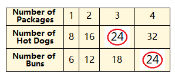

First lets review some vocabulary. Match each word with its definition.
Vocabulary.
factor product divisible whole number
The result of multiplying two or more numbers together.
A counting number or zero.
Can be divided evenly (with no remainder) by another number.
A whole number that divides evenly into a given number.
Activity1.3.1.Rectangles.
For this Activity (and the Practice problems), you will need 40 small tiles.
Select 12 tiles from your collection. Can you make a rectangle using all 12 tiles? One possibility is a rectangle with length 4 tiles and height 3 tiles. Or we could arrange the rectangle with length 3 tiles and height 4 tiles.
What other rectangles can you make? Fill in the table below.
Length
\(\hphantom{0}1\hphantom{0}\)
\(\hphantom{0}2\hphantom{0}\)
\(\hphantom{0}3\hphantom{0}\)
\(\hphantom{0}4\hphantom{0}\)
\(\hphantom{0}5\hphantom{0}\)
\(\hphantom{0}6\hphantom{0}\)
\(\hphantom{0}7\hphantom{0}\)
\(\hphantom{0}8\hphantom{0}\)
\(\hphantom{0}9\hphantom{0}\)
\(\hphantom{1}10\hphantom{1}\)
\(\hphantom{1}11\hphantom{1}\)
\(\hphantom{1}12\hphantom{1}\)
Height
4
3
X
X
X
X
X
X
How many rectangles did you find? On the grid below, sketch all of your rectangles. Start each one in the bottom left-hand corner. The rectangles will overlap. What do you notice about the rectangles? (Hint: Draw in a diagonal on the grid, from bottom left to upper right.)
Repeat Problem 1 with a set of 24 tiles. Make your own table for Length and Height, and use the grid below to sketch your rectangles. (Note: two of your rectangles will not fit on the grid.)
Can you think of two whole numbers whose product is 12? Can you think of another pair? Lets try the whole numbers in order, starting with 1. We are looking for factors of 12, or numbers that divide evenly into 12.
Length
\(\hphantom{0}1\hphantom{0}\)
\(\hphantom{0}2\hphantom{0}\)
\(\hphantom{0}3\hphantom{0}\)
\(\hphantom{0}4\hphantom{0}\)
\(\hphantom{0}5\hphantom{0}\)
\(\hphantom{0}6\hphantom{0}\)
\(\hphantom{0}7\hphantom{0}\)
\(\hphantom{0}8\hphantom{0}\)
\(\hphantom{0}9\hphantom{0}\)
\(\hphantom{0}10\hphantom{0}\)
\(\hphantom{0}11\hphantom{0}\)
\(\hphantom{0}12\hphantom{0}\)
Height
12
6
4
3
X
2
X
X
X
X
X
1
Do you see that these are the same numbers we found in Problem 1 of Activity 1.3.1? We have found three number pairs:
Each of these pairs of numbers is called a factor pair for 12. (The order of the numbers in a factor pair doesnt matter.)
Activity1.3.2.Factor Pairs.
Find all the factor pairs for each number. List them in order.
\(\displaystyle 27\)
\(\displaystyle 26\)
\(\displaystyle 25\)
\(\displaystyle 24\)
\(\displaystyle 23\)
Which number above has the most factor pairs?
Which number above has the fewest factor pairs?
Definition.
A counting number (larger than 1) that is evenly divisible only by 1 and itself is called a prime number. A counting number larger than 1 that is not prime is called composite.
Because 6 is divisible by 2 and 3, it is composite. Similarly, 2 and 5 are factors of 10, so it is composite also. But 7 has no factors other than 1 and 7, so it is prime. Similarly, 11 is prime.
In Activity 1.3.3 well find all the prime numbers between 1 and 100.
Activity1.3.3.The Sieve of Eratosthenes.
Circle the first prime number, 2. Cross out all multiples of 2.
Circle the first number that is not crossed out. (It should be a prime number.) Cross out all multiples of that number.
Repeat part (b) until there are no more numbers to cross out.
The circled numbers are the primes!
Subsection1.3.2Primes and Composites
The prime numbers are important because they are the building blocks for the whole numbers: every composite number is a product of primes.
Example1.3.3.
Write each composite number as a product of primes.
\(\displaystyle 35\)
\(\displaystyle 8\)
Solution.
\(\displaystyle 35 = 5 \times 7\)
\(\displaystyle 8 = 2 \times 2 \times 2\)
Checkpoint1.3.4.
Write each composite number as a product of primes.
\(\displaystyle 10\)
\(\displaystyle 18\)
Answer.
\(\displaystyle 10 = 2 \times 5\)
\(\displaystyle 18 = 2 \times 3 \times 3\)
The list of prime numbers whose product is the original number is called the prime factorization of a composite number. To find the prime factorization of a larger number, we can use a factor tree.
Example1.3.5.
Find the prime factorization of 60.
Solution.
We begin by finding any factor pair for 60. For example, we might start with \(60 = 6 \times 10\text{.}\) We write each factor on a "branch" of the tree, as shown below:
Both 6 and 10 are composite numbers and can be factored further.
Now all the factors are prime numbers. These are the "leaves" of the factor tree. We circle each prime factor, and then write them in increasing order. The prime factorization of 60 is
It doesnt matter how we start a factor tree; we will always get the same prime factorization at the end. In the previous Example, we might have started the factor tree with \(60 = 2 \times 30\) and built the following tree.
You can see that we end up with the same prime factorization of 60.
Checkpoint1.3.7.
Build a factor tree and write the prime factorization for 280.
Answer.
\(280 = 2 \times 2 \times 2 \times 5 \times 7\)
There is only one prime factorization for any whole number.
Fundamental Theorem of Arithmetic.
Every whole number greater than 1 can be written in exactly one way as a prime number or as a product of primes.
Subsection1.3.3Greatest Common Factor
We use factors when we work with fractions. Suppose we would like to reduce the fraction \(\dfrac{15}{24}\text{.}\) We look for the largest number that divides evenly into both 15 and 24, or in other words, the largest number that is a factor of both 15 and 24. By listing all the factors of each number, we can see that the largest factor common to both 15 and 24 is \(\alert{3}\text{.}\)
We say that 3 is the greatest common factor or GCF for 15 and 24.
Definition.
The greatest common factor or GCF of two whole numbers is the largest factor of both numbers.
Example1.3.8.
Find the greatest common factor of 16 and 24.
Solution.
We list all the factors of 16 and 24.
The numbers 16 and 24 have several common factors (namely, 1, 2, and 4), but the largest common factor is 8. The GCF of 16 and 24 is 8.
Checkpoint1.3.9.
List all the factors of 18 and 24.
Find the GCF of 18 and 24.
Answer.
18: 2, 3, 6, 9
24: 2, 3, 4, 6, 8, 12
6
There is a faster way to find the GCF of two numbers, using their prime factorizations.
Example1.3.10.
Use prime factorization to find the greatest common factor of 16 and 24.
Solution.
Make factor trees to verify the factorizations of 16 and 24.
Do you see why this method works? By including all the factors that appear in both 18 and 24, we find the largest number that will divide evenly into both 18 and 24.
Checkpoint1.3.12.
Use prime factorization to find the greatest common factor of 18 and 24.
Tastee hot dogs come in packages of 8, and Tastee hot dog buns come in packages of 6. How many packages of each should you buy so that you wont have any hot dogs or buns left over?
Lets try some numbers. We are looking for the same number of hot dogs as buns.

We can stop here. If we buy 3 packages of hot dogs and 4 packages of buns, well have equal numbers of each: 24 hot dogs and 24 buns.
The numbers in the second row of the table are multiples of 8, and the numbers in the third row are multiples of 6. The number 24 is a common multiple of 6 and 8; in fact, it is the lowest common multiple. (You can check that 48 and 72 are also common multiples of 6 and 8.)
Definition.
The lowest common multiple or LCM of two whole numbers is the smallest number that is a multiple of both whole numbers.
Example1.3.13.
Find the lowest common multiple for 12 and 15.
Solution.
We list multiples of each number until we find the smallest common multiple.
We see that 60 is the smallest number that is a multiple of both 12 and 15. The LCM of 12 and 15 is 60.
Checkpoint1.3.14.
Juicee hot dogs come in packages of 10, and Juicee hot dog buns come in packages of 8. How many packages of each should you buy so that you wont have any hot dogs or buns left over?
What is the LCM of 8 and 10?
Answer.
4 packages of hot dogs and 5 packages of buns
40
We can use prime factorization to find LCMs, too.
Example1.3.15.
Use prime factorization to find the lowest common multiple for 12 and 15
Solution.
Make factor trees to verify the factorizations of 12 and 15.
Write the two prime factorizations with common factors aligned vertically.
42 =
60 =
Find the GCF for 42 and 60.
In Step 3, circle the factors you used to build the GCF.
Find the LCM for 42 and 60.
In Step 3, circle the factors you used to build the LCM. (Use a different color than the circles in (4b), or use squares.
Find the product of 42 and 60.
Find the product of the GCF and the LCM for 42 and 60.
What do you notice?
Can you explain why that is true?
If you have found the GCF for 42 and 60, what is an easy way to find their LCM?
If you have found the LCM for 42 and 60, what is an easy way to find their GCF?
Subsection1.3.5Vocabulary
whole number
product
factor
factor pair
divisible
multiple
prime
composite
factor tree
prime factorization
greatest common factor (GCF)
lowest common multiple (LCM)
Exercises1.3.6Practice 1.3
Exercise Group.
For Problems 1-4,
Find all factor pairs for the number given. Use a table like this one to record your results:
First Number
1
2
3
4
5
Second Number
\(\hphantom{000}\)
\(\hphantom{000}\)
\(\hphantom{000}\)
\(\hphantom{000}\)
\(\hphantom{000}\)
\(\hphantom{000}\)
What was the largest "First number" you had to check to make sure you found all the factor pairs?
1.
36
2.
45
3.
56
4.
100
Exercise Group.
For Problems 5 and 6, follow the instructions in Activity1.3.1. Some of your rectangles may not fit on the grid.
5.
Make a table showing the length and height of all rectangles you can make with 30 tiles.
Sketch your rectangles on the grid below, starting each rectangle in the lower left corner.
6.
Make a table showing the length and height of all rectangles you can make with 30 tiles.
Sketch your rectangles on the grid below, starting each rectangle in the lower left corner.
Exercise Group.
For Problems 7-10, find a factor pair for the first number whose sum is the second number.
7.
24, 11
8.
24, 10
9.
54, 21
10.
80, 21
11.
What is the smallest number that is the product of four different prime factors?
12.
List four different composite numbers whose prime factors are all 3s.
Exercise Group.
Look back at your prime sieve in Activity1.3.3, and use it to answer the questions in Problems 13-22. (There is another copy of the number grid at the end of the Practice set.)
13.
How many primes did you find?
14.
5 and 7 are called twin primes because they are separated by only one number. List all the twin primes less than 100.
15.
Find 5 composite numbers in a row.
16.
What is the longest string of consecutive composite numbers less than 100?
17.
When you made the sieve, you didnt need to cross out multiples of 6. Why not?
18.
Although 11 is a prime, you didnt need to cross out multiples of 11. Why not?
19.
Which number has the most different prime factors?
20.
List all the composite numbers that have only one prime factor, occurring twice. These numbers are called "perfect squares."
21.
Which number has the most copies of the same prime factor?
22.
Which number has the largest prime factor?
Exercise Group.
Use the number grid below to continue the Sieve of Eratosthenes, and find all the primes between 100 and 200. Begin by crossing out all multiples of 2, then all multiples of 3, etc. If possible, use a different color for the multiples of each prime. Then answer the questions in Problems 23-30.
23.
List all the prime numbers between 100 and 200. How many are there?
24.
List all the twin primes between 100 and 200.
25.
What is the longest string of consecutive composite numbers between 100 and 200?
26.
What was the largest prime for which you had to cross out multiples?
27.
Which two rows of your table have the most primes?
28.
Which column of your table has the most primes?
29.
A number cannot be a prime if it ends in 2, 4, 6, or 8. Why is that?
30.
A number cannot be a prime if it ends in 5 or 0. Why is that?
Exercise Group.
For Problems 31-38,
Make a factor tree for the composite number.
Write the prime factorization for the number.
31.
36
32.
84
33.
72
34.
66
35.
250
36.
169
37.
198
38.
180
Exercise Group.
For Problems 39-50, find the greatest common factor.
39.
36, 48
40.
32, 48
41.
35, 56
42.
36, 54
43.
50, 76
44.
60, 72
45.
7, 19
46.
14, 27
47.
51, 57
48.
66, 110
49.
216, 288
50.
150, 400
Exercise Group.
For Problems 51-54,
List all factors of the first number.
Find the greatest common factor.
51.
34, 765
52.
29, 1392
53.
43, 173
54.
169, 605
Exercise Group.
For Problems 55-62, find the lowest common multiple.
55.
20, 25
56.
20, 24
57.
14, 21
58.
15, 45
59.
30, 42
60.
50, 76
61.
66, 110
62.
60, 72
63.
Give an example where the LCM of two numbers is their product.
Give an example where the LCM of two numbers is not their product.
Give an example where the LCM of two numbers is the larger of the numbers.
64.
Write the prime factorization of 30.
Write the prime factorization of 42.
Find the GCF of 30 and 42. Circle the factors that you used from parts (a) and (b) to build the GCF.
Find the LCM of 30 and 42. Circle the factors that you used from parts (a) and (b) to build the LCM.
What do you notice about the factors you circled in parts (c) and (d)?
Exercise Group.
For Problems 65-70,
Answer the question in the problem.
Did you need to find a GCF or an LCM?
65.
Marlene is ordering supplies for her art class. Each student should get the same set of materials. She will need 138 sheets of construction paper and 115 crayons. How many students are in her class?
66.
Avril is planning the meals for a conference. She will need 212 sandwiches and 318 cookies so that each guest gets the same amount of food. How many people will attend the conference?
67.
Saturn takes about 30 Earth years to make one revolution around the Sun, and Jupiter takes about 12 Earth years to make one revolution. If Earth, Jupiter, and Saturn are in a straight line right now, how long will it be before they are aligned again?
68.
Yusuf runs one lap around the track in 72 seconds, and Kwan runs one lap in 64 seconds. If they start at the same time, how long will it be before they are at the starting line at the same time again? How many laps will each boy have run?
69.
Daffodil bulbs come in packages of 40, and tulip bulbs come in packages of 25. How many packages of each should you buy so that you will have the same number of tulips and daffodils?
70.
Last weekend the swim team made $198 by mowing lawns. This weekend they made $260. How much did they charge to mow a lawn?